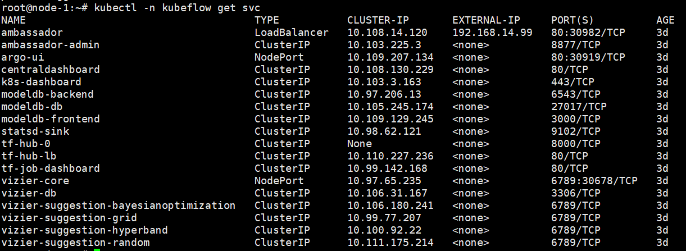
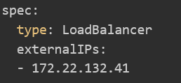
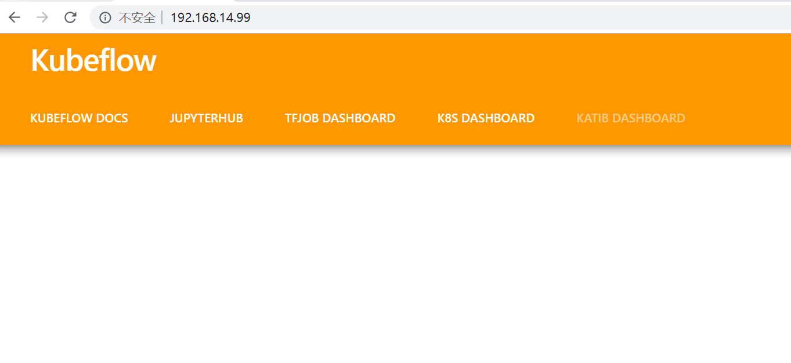
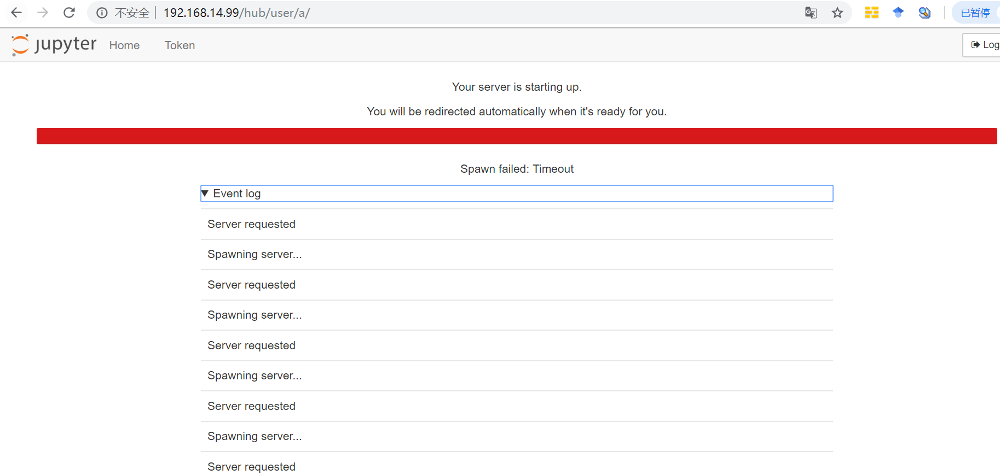
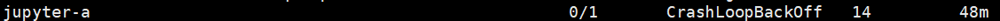
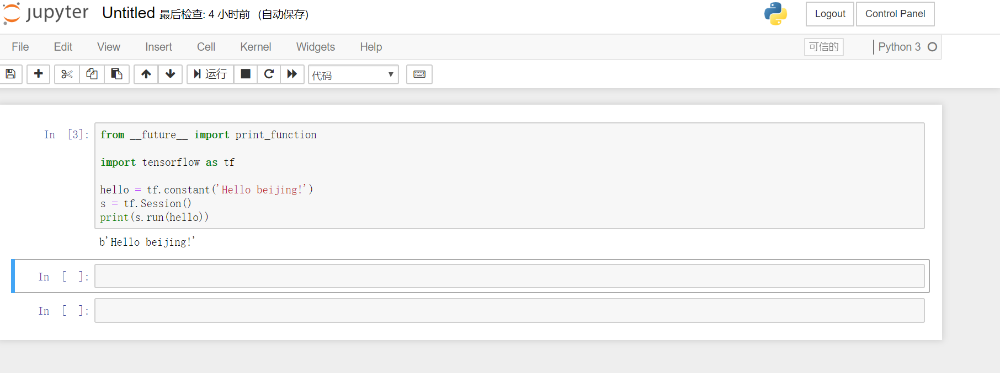

kubeflow使用图像界面
按照前几篇文章搭建好Kubeflow集群后，所有的pod都能运行了。但是在自己本地浏览器访问界面时却发现网页一直打不开。访问不了jupyter。这样因为默认的这些服务都是使用cluster ip。只能集群内部访问，外网访问不了。
解决方法：
查看当前的服务
|
|
 如图所示，这里注意，这是我修改完的结果，ambassador服务已经是LoadBalancer模式。未修改前所有的都应该是ClusterIP或者nodeport。
修改模式的yaml文件
kubectl -n kubeflow edit svc ambassador
如上图所示，将 Type 修改成 LoadBalancer，并且新增 externalIPs 指定为 Master IP然后保存退出，这个时候在浏览器中输入你的 master ip就可以访问图形界面了。
还存在的问题（国内环境）
如果是国内环境，发现浏览器确实能访问Jupyter页面了。如下图所示：

按照官网的教程，点击JUPYTERHUB，然后随便输入用户名（这里我输入的用户名是’a’）。但是开始服务的时候，选好镜像，发现出现下面这个问题 
然后在服务器上发现这个问题 
出现上述问题的原因
（1）国内环境第一次使用jupyter时，会下载国外的镜像进行初始化。
（2）jupyter也需要存储卷
解决办法
第一提前下载需要的镜像，然后配置的时候，选择自己的镜像。
第二就是为jupyter配置存储卷。因为要将jupyter中的文件保存在本地的机器上。
镜像的话，可以先从dockerhub上下载相应的镜像，然后再tag成相应的镜像。 配置存储卷可以参考我的前面那篇文章“为kubeflow配置NFS存储卷”
注意：配置存储卷的path一定得是/home/joyvan/work，这个是默认的，否则会报错：
这是创建yaml文件的示例：
|
|
修改完后，重启pod：
就能登录jupyter页面了。 